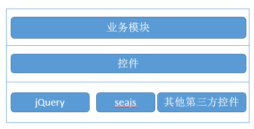

商城管理后台前端结构
基本结构：

模块加载：
采用CMD规范框架seajs,要求javascript代码及文件按CMD规范进行开发。
基本使用结构示例：
define(function(require, exports, module) {//模块定义 模块名称即js文件名
var $=require('jquery');//引用模块 无前缀模块为base.js中定义的模块别名
var pagination=require('../widgets/pagination');//加载控件模块使用相对路径
});
页面中加载模块入口文件：
<script src="../js/libs/seajs/sea-debug.js"></script> <!-- 加载seajs -->
<script src="../js/base.js"></script> <!-- 加载base.js -->
<script>
appManager.use('main');//引入入口模块文件 即app中js文件名 路径由base.js管理
</script>
PHP模板参数传递
appManager.use负责目录切换和初始模块加载
页面中php模板参数可通过appManager.use传递给PageParam模块，app中通过PageParam.getParam方法获取
示例：
页面中加载模块增加参数：
appManager.use('app1',{
param1:'param1',
param2:'param2'
});
App模块中获取参数：
var param=require('PageParam');
console.log(param.getParam());
注：第三方控件在base.js中配置了别名可以查看并使用别名快速加载
注：由于CKEditor有独立的加载机制不能进行模块化，需要单独引入"../js/libs/ckeditor/ckeditor.js"
目录结构：
Public/js
---app 应用（模块）业务js 页面中直接加载页面相关逻辑操作
---demoApp 控件演示用js
---libs 第三方js 包含插件和基础框架jquery seajs等
---widgets 控件js 包含第三方控件封装及开发控件
---base.js文件 公共基础js 负责目录切换seajs配置等
Public/demo/index.htm 控件示例及控件使用说明